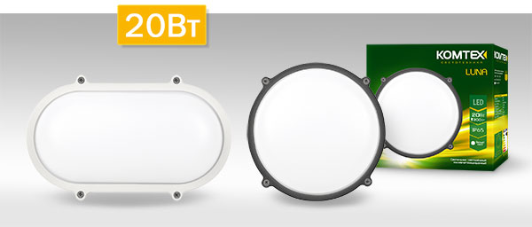
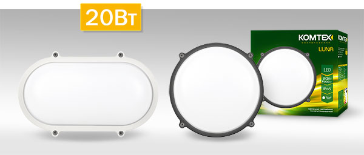

Данные корпуса изготавливаются из композиции SMC, которая представляет собой полиэфирный листовой
прессматериал с наполнителями из стекловолокна и минералов (карбонат кальция и гидроксид алюминия, пигменты икатализаторы).
Благодаря свойствам материала SMC полиэстерные корпуса ЩУ IP54 и ЩМП IP54 IEK® практически универсальны для применения в любых условиях и на любых объектах:
применения в любых условиях и на любых объектах:
Основные достоинства полиэстерных корпусов IEK:
Светодиодные светильники ДБП LUNA LED мощностью 20 Вт от КОМТЕХ уже в продаже!
Благодаря свойствам материала SMC полиэстерные корпуса ЩУ IP54 и ЩМП IP54 IEK® практически универсальны для применения в любых условиях и на любых объектах:
применения в любых условиях и на любых объектах:
- В помещениях с высокой концентрацией кислоты, соли и пыли (например, в нефтяной перерабатывающей промышленности);
- На объектах транспортной системы - ж/д, автомагистралях и т.п.;
- На открытом воздухе, при любых погодных условиях и температурах от -50 °C до +70 °C.
Основные достоинства полиэстерных корпусов IEK:
- Антивандальность: корпуса имеют высшую степень защиты IK10 (энергия удара 20 Дж или падение 5 кг гири с высоты 40 см);
- Негорючесть: температура, при которой происходит самозатухание корпуса, превышает 1000 °C;
- Стойкость к коррозии: корпуса не ржавеют и не нуждаются в покраске;
- Широкий диапазон рабочих температур: температура эксплуатации от -50 °C до +70 °C;
- Отсутствие в необходимости заземления корпуса: благодаря диэлектрическим свойствам материала корпуса не требуют заземления;
- Стойкость к ультрафиолетовым лучам: свойства материала SMC делают корпуса стойкими к УФ-лучам с возможностью установки на открытом воздухе;
- Возможность использования в системе АСКУЭ: материал SMC не создает помех для передачи радио- и GSM-сигнала.
Новые LUNA LED характеризуются повышенным световым потоком, составляющим 1600Лм, что превышает аналогичный показатель других светильников серии в два раза. Максимальная мощность светильников – 20Вт, благодаря чему они являются самыми мощными в своем классе.

Новая мощная LUNA LED используется для освещения открытых территорий: подъездов, входных групп торговых центров и промышленных объектов, стоянок, АЗС. Также светильник может эксплуатироваться в закрытых помещениях, в которых требуется высокая степень защиты от пыли и влаги.
LUNA LED 20Вт – надежный антивандальный светильник со степенью защиты IP65, полностью соответствующий требованиям актуальных нормативных актов: постановлению правительства РФ от 20 июля 2011 г. № 602 «Об утверждении требований к осветительным устройствам и электрическим лампам, используемым в цепях переменного тока в целях освещения» и ГОСТ Р МЭК 60598-1.
Светильники LUNA LED ТМ КОМТЕХ с максимальной мощностью 20 Вт и световым потоком 1600 Лм доступны в двух вариантах исполнения корпуса: круглом и овальном. Цвета светильников: белый и графит.
Cтруктурированные кабельные системы Hyperline появились в ассортименте ЭТМ

Новая мощная LUNA LED используется для освещения открытых территорий: подъездов, входных групп торговых центров и промышленных объектов, стоянок, АЗС. Также светильник может эксплуатироваться в закрытых помещениях, в которых требуется высокая степень защиты от пыли и влаги.
LUNA LED 20Вт – надежный антивандальный светильник со степенью защиты IP65, полностью соответствующий требованиям актуальных нормативных актов: постановлению правительства РФ от 20 июля 2011 г. № 602 «Об утверждении требований к осветительным устройствам и электрическим лампам, используемым в цепях переменного тока в целях освещения» и ГОСТ Р МЭК 60598-1.
Светильники LUNA LED ТМ КОМТЕХ с максимальной мощностью 20 Вт и световым потоком 1600 Лм доступны в двух вариантах исполнения корпуса: круглом и овальном. Цвета светильников: белый и графит.
В ассортименте компании появилась продукция производителя Hyperline. Hyperline является производителем полного спектра продукции для построения структурированных кабельных систем (СКС).
Структурированные кабельные системы Hyperline включают в себя:
Структурированные кабельные системы Hyperline включают в себя:
- медные и оптические кабели
- кросс-панели
- соединительные шнуры
- модульные гнезда
- информационные розетки
- вспомогательное оборудование.